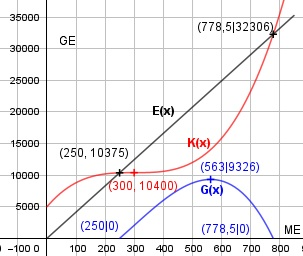

Aufgabe 80 Ein Betrieb produziert mit der Kostenfunktion K(x) = 0,0002x3 - 0,18x2 + 54x + 5000 und einer Umsatzfunktion U(x) = 41,5x. a) Zeigen Sie, dass K(x) keinen Extremwert hat. b) Welche betriebswirtschaftliche Bedeutung hat der Wendepunkt der Kostenfunktion? c) Berechnen Sie das Betriebsoptimum, wenn die Stückkostenfunktion ihr Minimum bei x = 500 hat. d) Die Gewinnschwelle liegt bei 250 ME. Wo liegt die Gewinngrenze? e) Bei welcher Produktionsmenge entsteht das Gewinnmaximum? K'(x) = 0,0006x2 - 0,36x + 54 K''(x) = 0,0012x - 0,36 U(x) = 41,5x G(x) = 41,5x - (0,0002x3 - 0,18x2 + 54x + 5 000) G(x) = -0,0002x3 + 0,18x2 - 12,5x - 5 000 G'(x) = -0,0006x2 + 0,36x - 12,5 G''(x) = -0,0012x + 0,36 a) Bedingung K'(x) = 0 0,0006x2 - 0,36x + 54 | :0,0006 x2 - 600x + 90 000 = 0 p, q - Formel: p = -600, q = 90 000 x1,2 = x1,2 = -3 ± x1,2 = -3 ± x1,2 = 300, K(300) = 10 400 K''(300) = 0,0012 * 300 - 0,36 = 0 K'''(x) = 0,0012 ≠ 0 Grad der Ableitung ungerade --> kein Extrempunkt, sondern Wendepunkt (300|10 400). b) Im Wendepunkt von K(x) hat die Grenzkosten- funktion K'(x) ein Minimum. c) Das Betriebsoptimum entsteht bei der Menge, bei der die Stückkosten minimal sind. K(500) = 12 000 GE Betriebsoptimum (500|12 000) d) Nullstellen: x1 = 250 Hornerschema: -0,0002 0,18 -12,5 -5000 x1 = 250 -0,05 32,5 5000 ------------------------------------- -0,0002 0,13 20 0 Polynomdivision: -0,0002x3 + 0,18x2 - 12,5x - 5000 : (x-250) = -(-0,0002x3 + 0,05x2) ---------------------- 0,13x2 - 12,5x - 5000 -(0,13x2 - 32,5x) ------------------ 20x - 5000 -(20x - 5000) ------------- 0 Ergebnis = 0,0002x2 + 0,13x + 20 -0,0002x2 + 0,13x + 20 = 0 |:(-0.0002) x2 - 650x - 100 000 = 0 p, q - Formel: p = -650, q = -100 000 x1,2 = x1,2 = -3 ± x1,2 = -3 ± x1,2 = 325 ± 453,5 x1 = 778,5 Gewinngrenze x2 = - 128,5 keine Lösung e) G'(x) = -0,0006x2 + 0,36x - 12,5 = 0 |:(-0,0006) x2 - 600x + 20 833 = 0 p, q - Formel: p = -600, q = 20 833 x1,2 = x1,2 = -3 ± x1,2 = -3 ± x1,2 = 300 ± 263 x1 = 563 G(563) = -0,0002 * 5633 + 0,18 * 5632 - - 12,5 * 563 - 5 000 = 9 326 GE x1,2 = 37 G(37) = -0,0002 * 373 + 0,18 * 372 - 12,5 *37 - - 5 000 = -5 208 GE --> Verlust G''(563) = - 0,0012 * 563 + 0,36 < 0 --> Hochpunkt (563|9 326) Bei 563 ME ist der Gewinn am größten und beträgt 9 326 GE.
